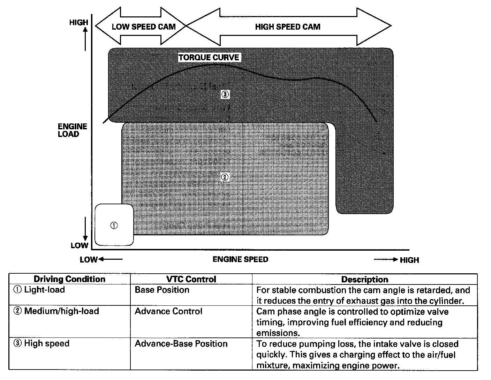
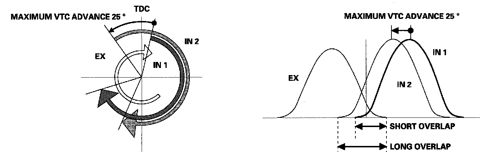
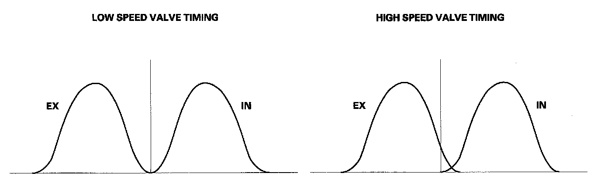
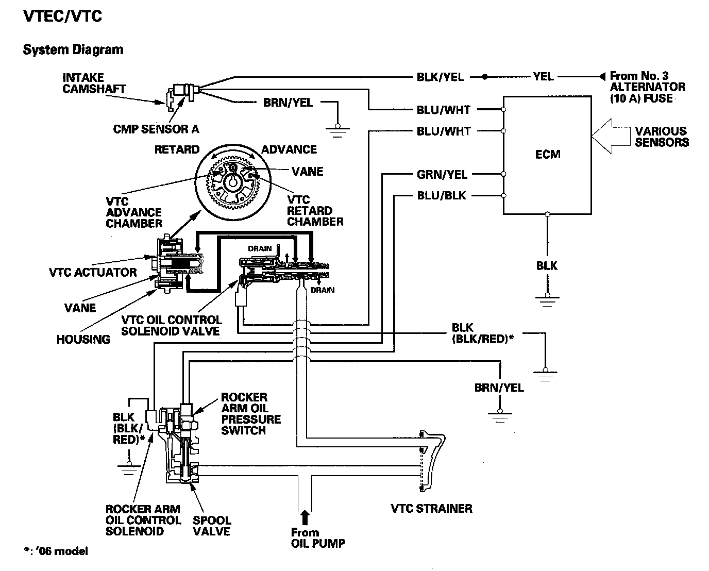
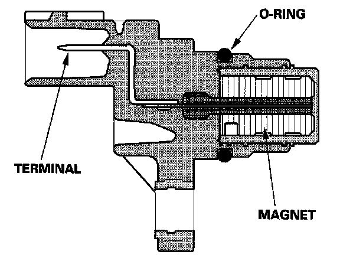

Variable Valve Timing Actuator: Description and Operation
VTEC/VTC
- The i-VTEC has a variable valve timing control (VTC) mechanism on the intake camshaft in addition to the usual VTEC.
This mechanism improves fuel efficiency and reduces exhaust emissions at all levels of engine speed, vehicle speed, and engine load.
- The VTEC mechanism changes the valve lift and timing by using more than one cam profile.
- The VTC changes the phase of the intake camshaft via oil pressure. It changes the intake valve timing continuously.

VTC System
- The VTC system makes continuous intake valve timing changes based on operating conditions.
- Intake valve timing is optimized to allow the engine to produce maximum power.
- Cam angle is advanced to obtain the desired EGR effect and reduce pumping loss. The intake valve is closed quickly to reduce the entry of the air/fuel mixture into the intake port and improve the charging effect.
- The system reduces the cam advance at idle, stabilizes combustion, and reduces engine speed.
- If a malfunction occurs, the VTC system control is disabled and the valve timing is fixed at the fully retarded position.

VTEC System
- The VTEC system changes the cam profile to correspond to the engine speed. It maximizes torque at low engine speed and output at high engine speed.
- The low lift cam is used at low engine speeds, and the high lift cam is used at high engine speeds.
VTEC/VTC:

System Diagram

Camshaft Position (CMP) Sensor A
CMP sensor A detects camshaft angle position for the VTC system.